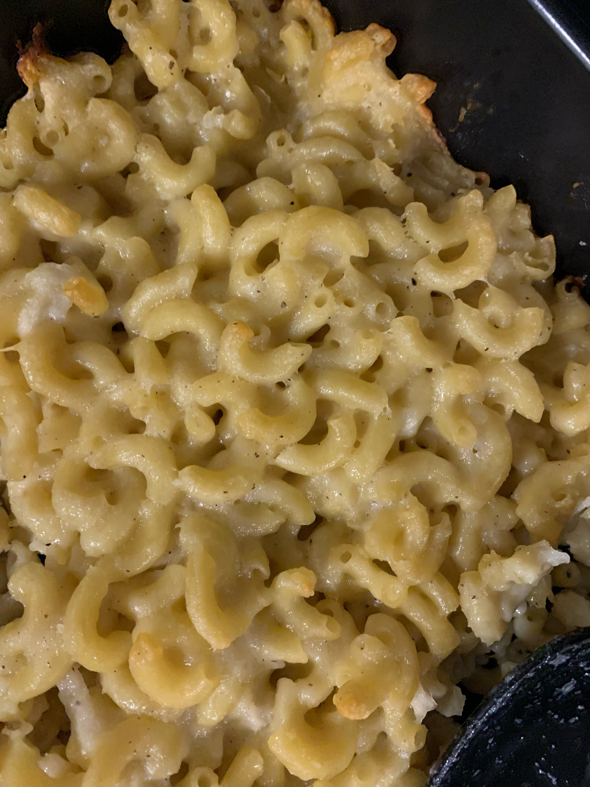
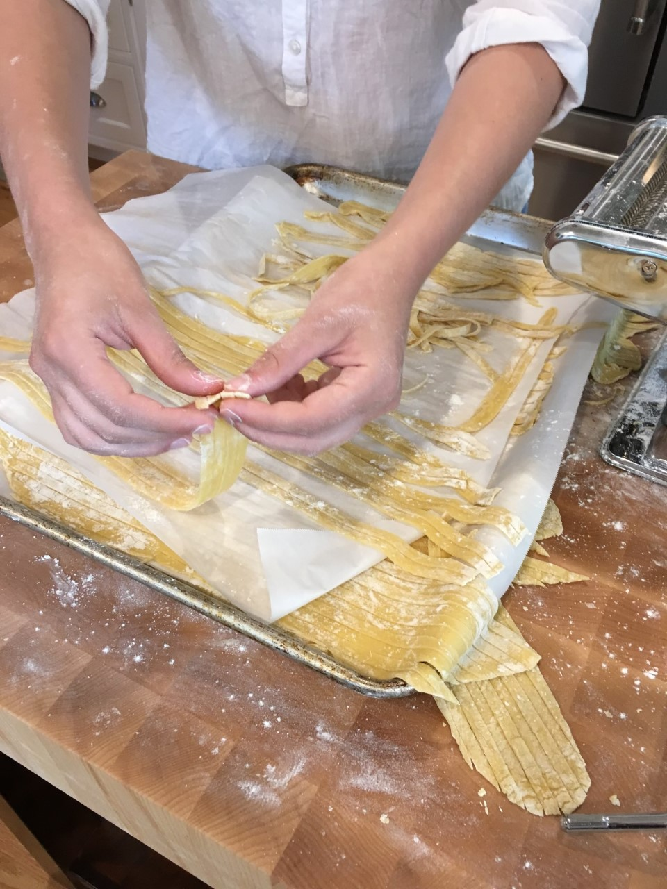

Myself and my three sisters were definitely not the easiest customers for my mom and dad to feed.
If there was something we did not like, they heard about it! Once we all got into sports, clubs, and
extracurriculars dinner became a challenge of what could be made that everyone would eat and
wouldn’t take time away from our other evening activities. That being said there were also special
times like weekends and birthdays where preparing dinner was made an all-day event. There are a
few dinners specifically that I remember and to this day these meals still bring me comfort and joy.
Mom's Mac

This is a staple in our house. When we would come home from school, and mom was making this,
we all knew it was going to be a good night. My sisters and I still get excited when we are home
and this is on the menu. When I got to college, I knew it was something I needed to learn how to
recreate for myself.
Ingredients and Supplies:
-1 box of pasta (elbows or shells work best)
- Half stick of butter
-1 brick of shape white cheddar
- 1 brick of monetary jack
-1 small yellow onion
-1 clove of garlic (to taste)
-Salt and pepper (to taste)
-1 cup of milk (or milk substitute)
- Spoonful of flour
- Pot
- Casserole dish
Instructions:
-Start by boiling salted water and adding in your pasta of choice and preheating your oven to 350
degrees Fahrenheit
- Cook pasta according to box instructions minus 1-2 minutes, pasta should be slightly al dente
(firm) because it will continue cooking later.
- After draining pasta add the butter and diced onion, salt, pepper and garlic to the now empty pasta
pot over low to medium heat until the onion is translucent.
- Now add a heaping spoonful of flour to make a rue, it should create a paste like substance.
- Add your milk to the rue and stir
-Now add the diced cheese to the pot and stir until mostly melted
- Add pasta to the pot and stir until the noodles are coated in the cheese mixture.
- Pour mixture into your casserole plan, cover with foil, and place in a preheated oven.
- Once you can see bubbles in your mixture remove the foil and allow the top to brown slightly
-Remove from oven, let set, and serve with a vegetable of your choice
Homemade Pasta

As I am sure you are starting to realize there is a common theme to my favorite recipes, most (all)
of them include some type of pasta or bread. There is nothing like the taste of fresh pasta, maybe it
is the work you put in. Our first pasta maker was a gift from my grandmother to mother. After that
broke (don’t get your pasta maker wet!) we purchased a new one to avoid hand rolling our dough.
Ingredients & Supplies
-2 cups of flour
- 3 large eggs
- salt (around a half teaspoon or to taste)
- ½ tablespoon olive oil
- Pasta maker or rolling pin
- pot
Optional: pasta hanger
Instructions:
-Pour flour onto your counter and make a well with your fingers.
-In the well place eggs oil and salt, use a fork to start incorporating flour until you can use your
hands to bring the dough together
-Kneed the dough until smooth
- Cut the ball into equal manageable parts and roll through pasta maker (or roll with pin)
- Once it is thin enough cut into strips or use pasta machine to cut noodles
- Place noodles on a tray or pasta hanger while boiling water
- Cook noodles to preference and smother in sauce